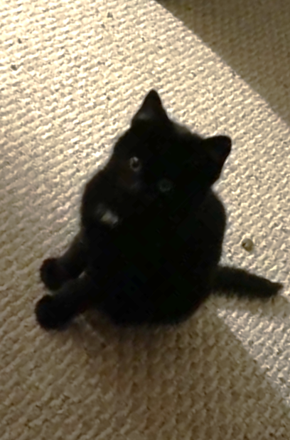
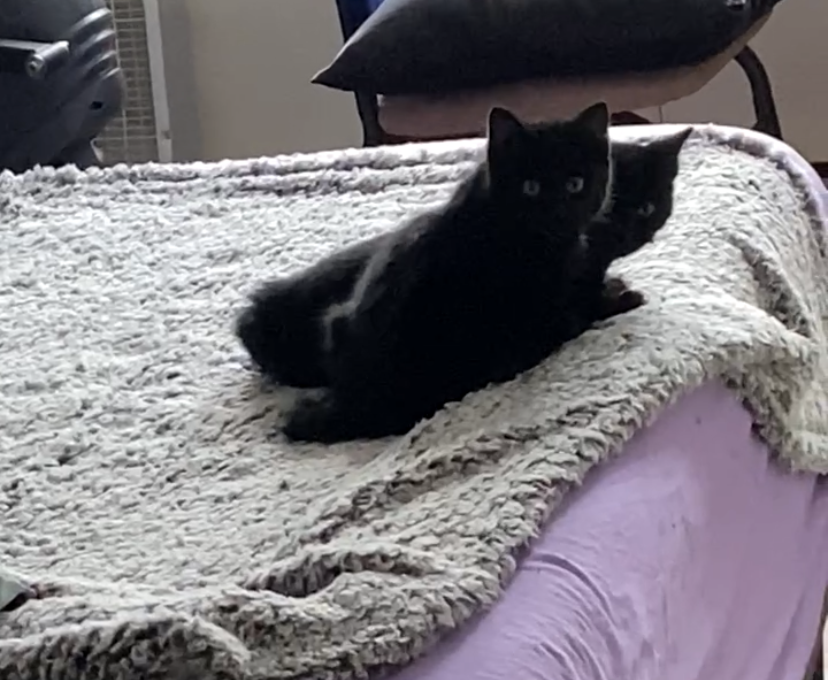

Ichi and his brother Pepe were two kittens found living under my coworker's mobile home. As soon as I heard about her feeding this family of cats living outside, I made plans to set havahart traps to catch them and find homes for them. This was especially precarious to me as it was approaching frigid temperatures of winter. December 21st 2020 I trapped a family of 8 cats including the mother, her three kittens and an older set of teenage cats of hers and held them all in my bedroom. I didn't know what I was doing but it ended up being the best thing I've ever done.
Ichi was the first of the kittens to come out and play. He was so brave! Anytime I pulled out a toy and they saw me standing at the doorway I'd see this cute little black furball with a white dot on his chest dart right out to play. I always wonder if I made him into a scared cat. When it was time to bring all the kittens to the vet I fed them to distract my grabbing for them. Ichi was especially aware and ran away immediately when I grabbed onto him. Ichi was really untrusting after this. It was months later when I could first bring him in for his first checkup. On another occasion while most of his family was still with me he went out exploring, and stepped onto a very sticky bug trap. He was so freaked out, he did laps trying to getting away from the trap on his foot. His aunt kept hissing at me when I tried grabbing for the sticky pad. I eventually was able to step on the pad to get it off him but he was so done with me for quite some time after this. I remember the day he first let me pet him. It was April Fool's day, and it was the most wonderful moment! He actually raised his body up to meet my hand. Ever since he's been so sweet and he even became a lap cat! Ichi and Pepe are best friends, they groom each other, sleep together, and play together. Ichi deals with Mylie by trying to make her jealous. He'll sit on my lap and try to not let her near me.
Ichi's Traits:
- Intelligent
- Loving
- Alert, protective
- Loyal
| Favorite Thing | Favorite Toy | Best Quality |
|---|---|---|
| Go in catio | Ball turntable | Patient |